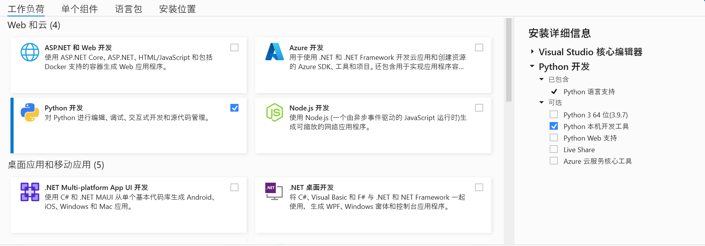

安装指南
操作系统要求
KunLun AutoTest暂支持以下操作系统 1. Win10 2. Ubuntu 18.04+
安装包下载
请从以下地址下载最新pip安装包, 安装包名以 tar.gz 结尾:
Python版本要求
KunLun AutoTest要求Python版本为 3.7.
安装方法
安装 Visual Studio
可以从以下地址下载最新版本 Visual Studio Installer.
https://learn.microsoft.com/zh-cn/visualstudio/install/install-visual-studio?view=vs-2022
选择工作负载 -> Python开发 -> Python本机开发工具, 然后点击安装即可.
安装 KunLun AutoTest
请将 pip 工具先行升级到最新版本, 再安装KunLun AutoTest, 否则可能遇到依赖包 cryptography 安装失败的问题.
使用 pip install kunlun-xx.xx.xx.tar.gz 即可, pip 工具会自动安装相关依赖.
需要说明的是: 建议创建虚拟环境virtual environment后, 再安装KunLun AutoTest, 虚拟环境的安装方法, 这里就不再赘述.
安装完成后, 命令行工具 kunlun 即为可用状态， 其相关用法介绍如下:
Usage: kunlun [start|stop|web|info]
- start Start KunLun AutoTest Service.
- stop Stop KunLun AutoTest Service.
- web Open KunLun AutoTest WebPage.
- info Show KunLun Autotest Service Status.